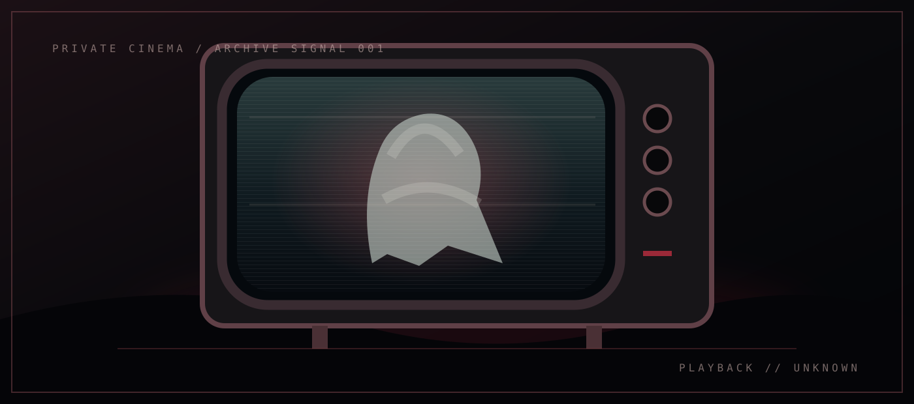

PERSONAL CINEMA LOG / VOL. 01
THE
SCREENING
ROOM
A private ledger for the films that haunt you. Build a watchlist, mark completed screenings, leave a rating and keep your own notes — all stored locally in this browser.
0IN YOUR LOG
0ON THE WATCHLIST
0SCREENED
—YOUR AVERAGE